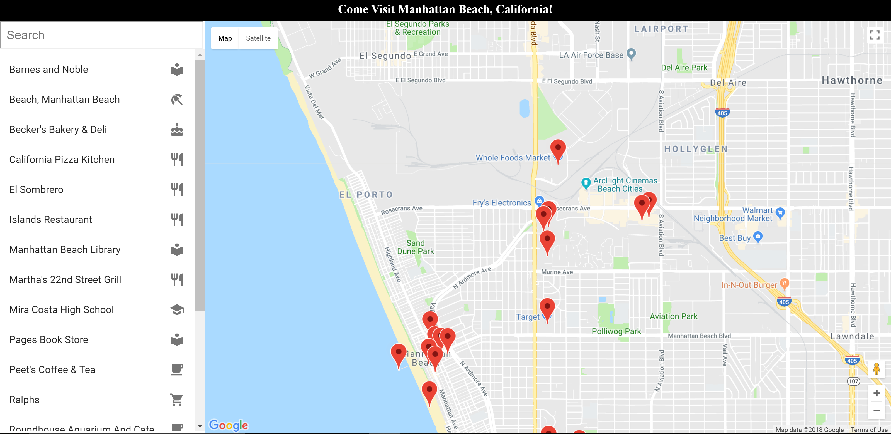

Neighborhood Map

GitHub repository: https://github.com/wbchristerson/neighborhood-map
This project includes a neighborhood map of Manhattan Beach, California along with information about several venues there including local restaurants, ocean-related sites, and stores. The project was bootstrapped with Create React App and developed using React. The map feature used in the application was obtained via react-google-maps, an application that integrates React with Google Maps. In turn, that software was itself based on Google Maps API. Documentation about react-google-maps can be found here. In addition, the street views for markers that were used were obtained with the street view feature of Google Maps, also through react-google-maps. Data about the included venues were extracted using the Foursquare API.
Structure
The focus of this project is on utilizing APIs to develop an application in conjunction with React.
Design
Users begin with a map of the neighborhood together with a list view of venues. A search feature allows the user to filter this list and upon clicking any item, the user is taken to the chosen venue's item page, detailing information about the location, hours of operation, busy times of the week and day, a photo view, contact information, customer tips, and more.


Running The Application
To download, you can clone the repository using this terminal command:
git clone https://github.com/wbchristerson/neighborhood-map.git
- Navigate to this page.
- Click the green "Clone or download" button towards the right then choose "Download ZIP".
-
Find the folder
neighborhood-map-masterin your Downloads folder or wherever it was placed on your device. - Right click and choose "Extract All".
-
To run the application, you will need to have
npminstalled. See here for installation information. -
To install all dependencies for the project from the command line, run the following commands in the terminal from within the project directory:
cd neighborhood-map
npm install -
You will need a
Google Maps PlatformAPI key along with aFoursquare Client IDand aFoursquare Client Secretto use in the application:-
If you do not have a Google Maps API key already, then you can obtain a
Google Maps PlatformAPI key for free here. You will have to create a billing account but there is a built in $200 credit. -
If you do not have the
Foursquare Client IDorFoursquare Client Secret, then you can obtain them here by first creating a free account. -
After you have all three data items, create a new folder in the
srcdirectory calledapi. -
Within
api, create a Javascript file calledAPIkey.js. Within this file add the following lines, whereYOUR_GOOGLE_KEY,YOUR_FOURSQUARE_CLIENT_ID, andYOUR_FOURSQUARE_CLIENT_SECRETare replaced by your personalized data values (don't forget the delimiting quotes):
export const GOOGLE_MAP_API_KEY = 'YOUR_GOOGLE_KEY'
export const FOURSQUARE_CLIENT_ID = 'YOUR_FOURSQUARE_CLIENT_ID'
export const FOURSQUARE_CLIENT_SECRET = 'YOUR_FOURSQUARE_CLIENT_SECRET' - Save the file.
-
If you do not have a Google Maps API key already, then you can obtain a
-
Assuming that your location in the terminal is now within the
neighborhood-mapdirectory, run the following command to execute the application:
npm start
(I believe thatyarn startwill also be sufficient.) -
Warning: The service worker that is bundled with
create-react-apponly works in production mode.
The page will open in the browser.